These have results per 1-second interval for: insert rate (IPS), max insert reponse time, query rate (QPS) and max query response time.
The results are from 1 client while the test may have N clients where N > 1.
The test is run with a rate limit for the number of inserts/s. In some cases the DBMS is unable to sustain that rate. When a DBMS can sustain that rate IPS will be a horizontal line.
Contents
fbmy5635_rel_withdbg.cay9c: IPS
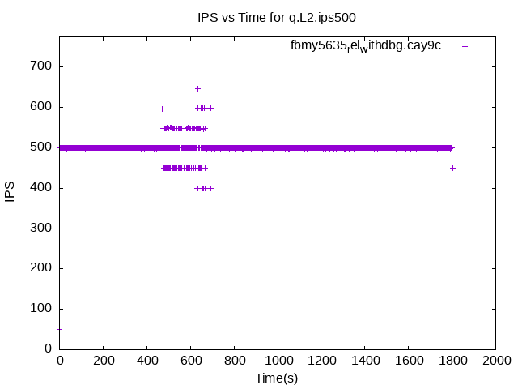fbmy5635_rel_withdbg.cay9c
fbmy5635_rel_withdbg.cay9c: max insert response time
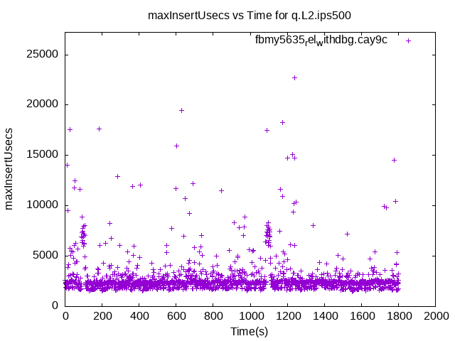fbmy5635_rel_withdbg.cay9c
fbmy5635_rel_withdbg.cay9c: QPS
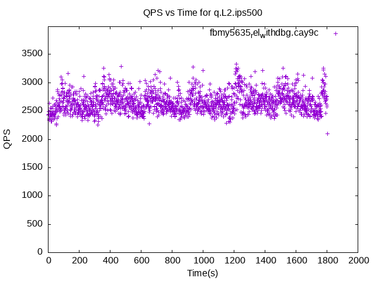fbmy5635_rel_withdbg.cay9c
fbmy5635_rel_withdbg.cay9c: max query response time
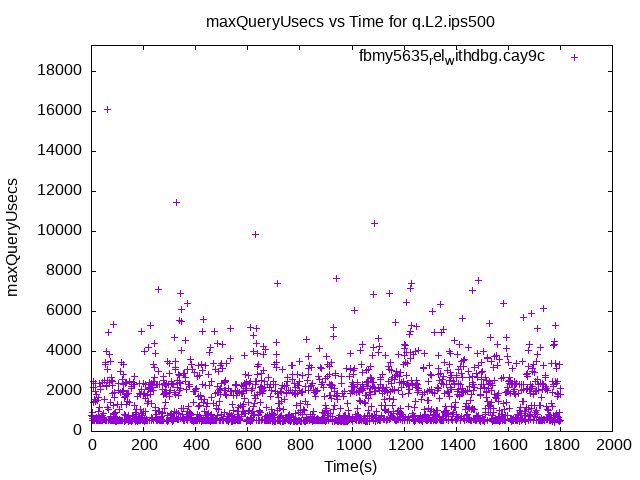fbmy5635_rel_withdbg.cay9c
fbmy5635_rel_o2.cay9c: IPS
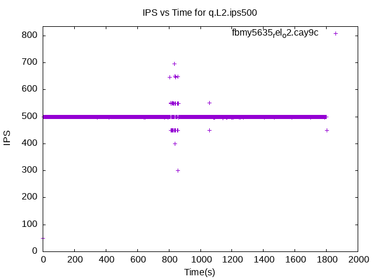fbmy5635_rel_o2.cay9c
fbmy5635_rel_o2.cay9c: max insert response time
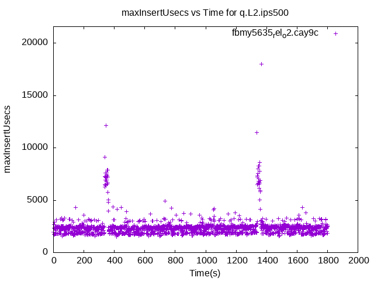fbmy5635_rel_o2.cay9c
fbmy5635_rel_o2.cay9c: QPS
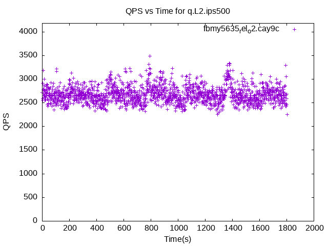fbmy5635_rel_o2.cay9c
fbmy5635_rel_o2.cay9c: max query response time
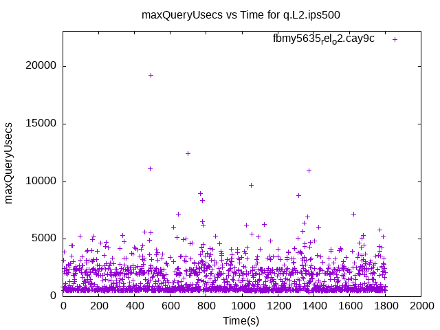fbmy5635_rel_o2.cay9c
fbmy5635_rel.cay9c: IPS
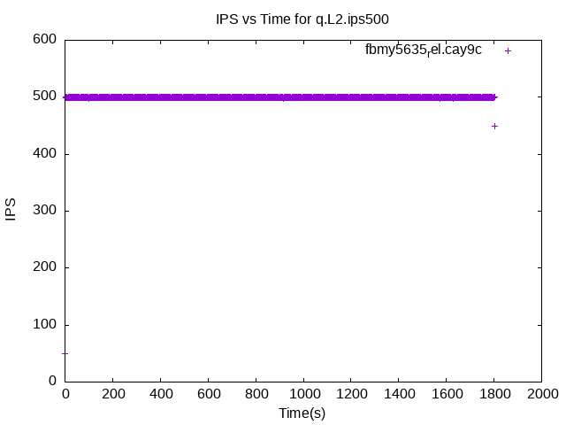fbmy5635_rel.cay9c
fbmy5635_rel.cay9c: max insert response time
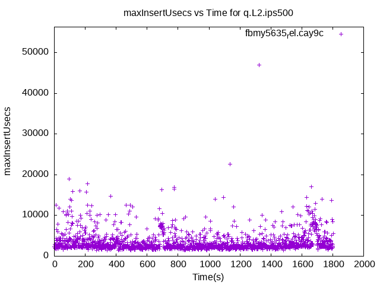fbmy5635_rel.cay9c
fbmy5635_rel.cay9c: QPS
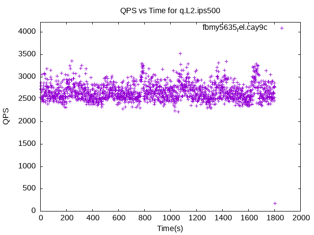fbmy5635_rel.cay9c
fbmy5635_rel.cay9c: max query response time
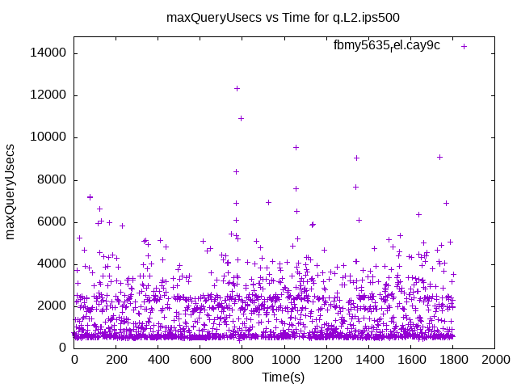fbmy5635_rel.cay9c